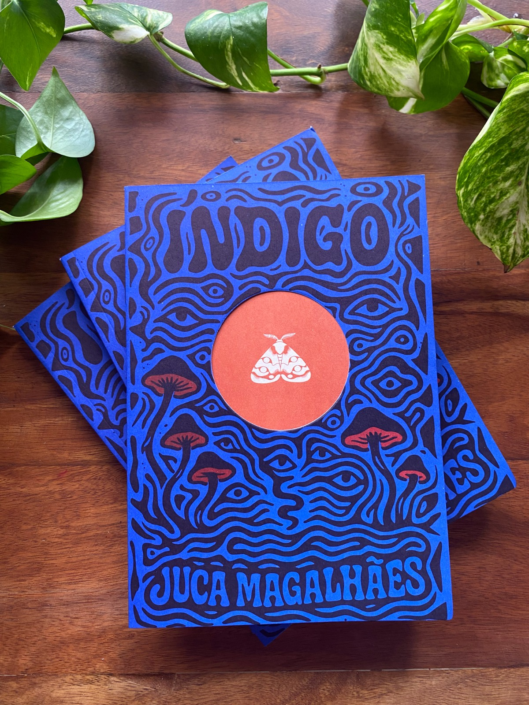

Índigo
Semi-Finalista do Prêmio Jabuti 2026
Impressões de Minas • 2025
Índigo é um romance de narrativa fechada, centrado na perspectiva de um rapaz não nomeado, um filho bom que, aos dezoito anos, decide sair de uma rua isolada para encontrar a irmã e o primo, a dupla que sempre o encheu de fascínio e cuja fuga o assombra a toda curva da estrada. Ao mesmo tempo, é um romance que mescla o fantástico e o histórico no desenrolar desse mundo novo e desconhecido ao narrador, um Brasil da Ditadura Militar em que o horror e o maravilhoso ocorrem lado a lado. Esse encontro é concretizado, como bem destaca o professor Assis Brasil, na quarta capa do livro, em uma flor que cresce no peito do narrador-protagonista, um abismo que o faz recordar – ou não o permite esquecer – de sua natureza aparentemente inescapável.
Comprar o livro